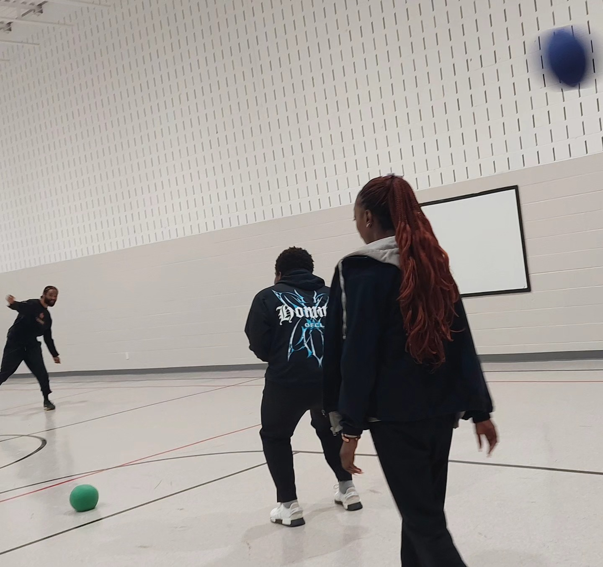
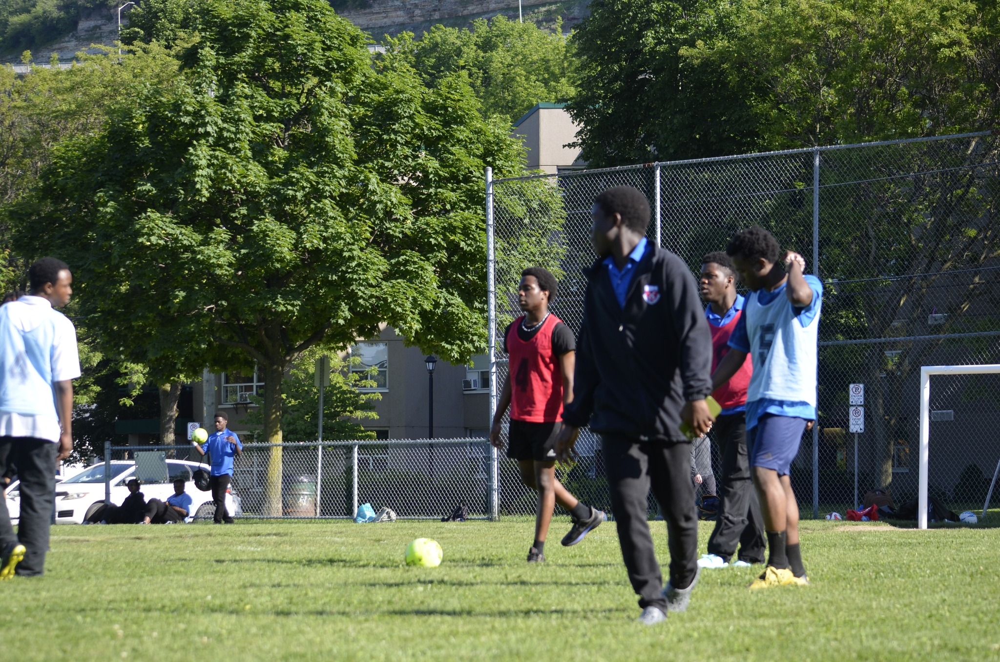
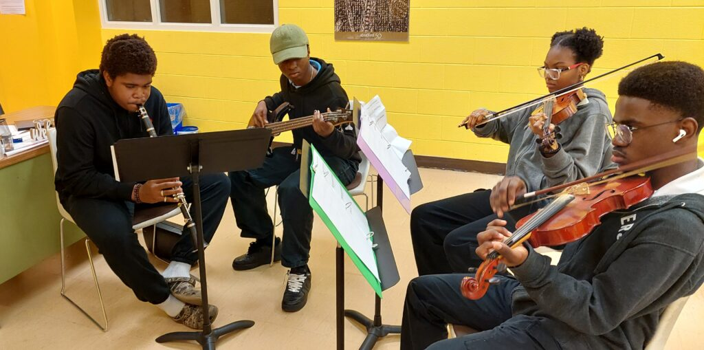

Clubs & Activities
At Southern Ontario Collegiate, we believe that extracurricular activities are an essential part of student life. We offer a range of clubs and activities for students to explore their interests, develop new skills, and build friendships. Whether you're passionate about sports or music, there's something for everyone!
Basketball Club

Join the Basketball Club to improve your skills on the court and work as part of a team. Whether you're a seasoned player or just starting, this club is perfect for students who love the sport. Regular practices and friendly matches are organized throughout the school year.
Soccer Club

The Soccer Club welcomes players of all levels. We focus on teamwork, skill development, and the joy of playing the world's most popular sport. Students will have the chance to participate in school leagues and compete with other teams in the region.
Music Club

If you have a passion for music, the Music Club is the perfect place to showcase your talent or learn a new instrument. We encourage students to express themselves through music and provide opportunities to perform in school concerts and community events.